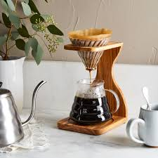
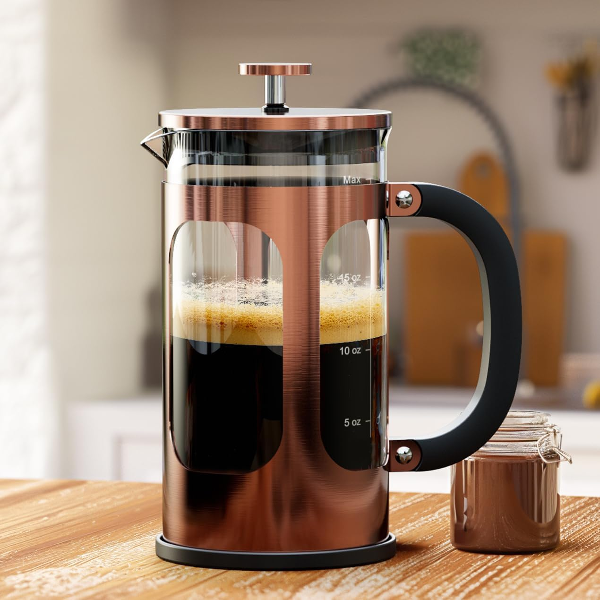
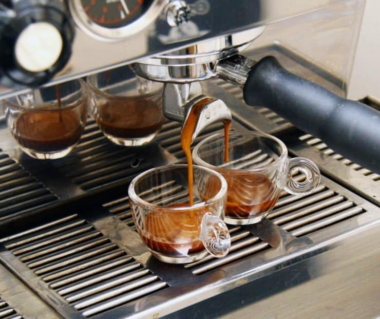
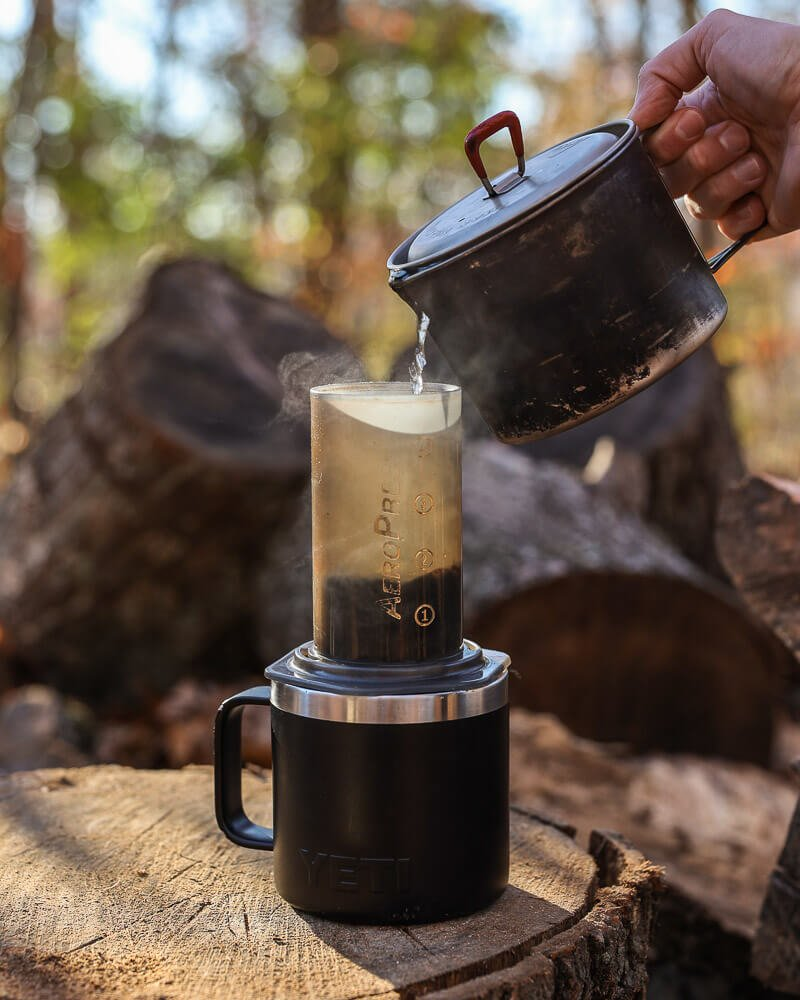
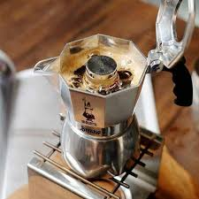

Brewing coffee is both an art and a science. Learn the basics of popular brewing methods to create your perfect cup every time.

Pour Over
A precise method using a dripper and filter for a clean, smooth flavor.
Tools:
- Pour-over dripper
- Paper filter
- Gooseneck kettle
- Scale
Steps:
- Place the dripper on your cup and insert a paper filter.
- Rinse the filter with hot water and discard the water.
- Add 20g of medium-ground coffee.
- Pour 40g of hot water (200°F) in a circular motion to bloom the coffee.
- Slowly pour an additional 300g of water, maintaining a steady stream.
- Let it drip completely, then enjoy.

French Press
A full-bodied brewing method using immersion for rich flavors.
Tools:
- French press
- Coarse-ground coffee
- Kettle
Steps:
- Add 30g of coarse-ground coffee to the French press.
- Pour 500g of hot water (200°F) over the coffee.
- Stir gently and place the lid on top, without pressing the plunger.
- Let it steep for 4 minutes.
- Press the plunger down slowly and serve.

Espresso
A concentrated shot of coffee brewed under high pressure.
Tools:
- Espresso machine
- Fine-ground coffee
- Tamper
Steps:
- Add 18g of finely-ground coffee to the portafilter.
- Tamp the coffee evenly and lock the portafilter into the machine.
- Brew the espresso for 25-30 seconds to yield 36g of coffee.
- Serve as is or use as a base for other drinks.

AeroPress
A portable and versatile brewer for a quick, flavorful cup.
Tools:
- AeroPress
- Paper filter
- Fine-ground coffee
- Kettle
Steps:
- Insert a paper filter into the AeroPress cap and rinse with hot water.
- Place the AeroPress on a cup and add 15g of coffee.
- Pour 220g of hot water (200°F) and stir gently.
- Insert the plunger and press down slowly after 1-2 minutes.

Cold Brew
A smooth, less acidic coffee made with cold water over time.
Tools:
- Cold brew maker or jar
- Coarse-ground coffee
- Filtered water
Steps:
- Add 100g of coffee to the cold brew maker or jar.
- Pour 1 liter of filtered water over the coffee.
- Stir gently to ensure all grounds are saturated.
- Cover and let it steep in the refrigerator for 12-24 hours.
- Strain the coffee and serve over ice.

Moka Pot
A traditional stovetop brewer for a strong, espresso-like coffee.
Tools:
- Moka pot
- Medium-fine ground coffee
- Stovetop
Steps:
- Fill the bottom chamber with water up to the valve.
- Add coffee to the filter basket and level it (don’t tamp).
- Assemble the Moka pot and place it on the stovetop.
- Heat on medium until coffee starts bubbling into the top chamber.
- Remove from heat when the bubbling sound subsides and serve.